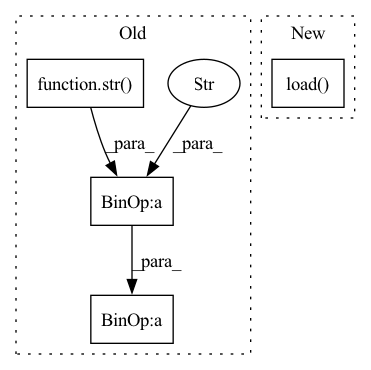

Pattern ID :19896
Before Change
Loads the sentence piece tokenizer specified in the yaml file
save_model_path = os.path.join(
hparams["save_folder"],
str(hparams["output_neurons"]) + "_" + hparams["token_type"] + ".model",
)
save_vocab_path = os.path.join(
hparams["save_folder"],After Change
// Defining tokenizer and loading it
tokenizer = spm.SentencePieceProcessor()
tokenizer.load( save_model_path)
// 2. Define audio pipeline:
@sb.utils.data_pipeline.takes("wav")
@sb.utils.data_pipeline.provides("sig")In pattern: SUPERPATTERN
Frequency: 3
Non-data size: 4
Instances Fragment ID: 64664179
Project Name: speechbrain/speechbrain
Commit Name: 6dd651e4361877efdefb3d5cb3489a35fe80f6f9
Time: 2021-01-07
Author: mirco.ravanelli@gmail.com
File Name: recipes/LibriSpeech/ASR/seq2seq/train.py
M Class Name: AnonimousClass
N Class Name: AnonimousClass
M Method Name: data_io_prepare(1)
N Method Name: data_io_prepare(1)
M Parent Class:
N Parent Class:
M File Name: recipes/LibriSpeech/ASR/seq2seq/train.py
N File Name: recipes/LibriSpeech/ASR/seq2seq/train.py
M Start Line: 223
M End Line: 284
N Start Line: 260
N End Line: 271
Before Change
if vocab == "word":
fn = os.path.join(cachedir, "cache." + str(max_size) + ".word.v1.pt")
elif vocab == "bpe":
fn = os.path.join(cachedir, "cache." + str(max_size) + ".bpe.v1.pt")
else:
raise RuntimeError("Unsupported vocab")
After Change
def get_lm_corpus(datadir, cachedir, dataset, vocab, max_size=None):
corpus = Corpus(datadir, dataset, vocab, cachedir, max_size=max_size)
if not corpus.load() :
logging.info("Producing dataset {}...".format(dataset))
corpus.train_and_encode()
with nv_utils.distributed.sync_workers() as rank: Fragment ID: 64664177
Project Name: microsoft/archai
Commit Name: d9cf55b6736359576e6601d4223fdbef27bc28f0
Time: 2022-12-16
Author: shitals@microsoft.com
File Name: archai/nlp/nvidia_transformer_xl/data_utils.py
M Class Name: AnonimousClass
N Class Name: AnonimousClass
M Method Name: get_lm_corpus(5)
N Method Name: get_lm_corpus(5)
M Parent Class:
N Parent Class:
M File Name: archai/nlp/nvidia_transformer_xl/data_utils.py
N File Name: archai/nlp/nvidia_transformer_xl/data_utils.py
M Start Line: 317
M End Line: 332
N Start Line: 26
N End Line: 32
Before Change
if your_model_from_repo.benchmark_state not in [ModelBenchmarkState.IN_PROGRESS,
ModelBenchmarkState.PENDING]:
finished = True
logger.info("successfully added " + str(your_model_from_repo.name) + " to model repository")
filename_ext = get_filename_suffix_by_framework(self.model_meta_data.framework)
download_path = os.path.join(context.ckpt_dir, new_model_from_repo_name + "_optimized" + filename_ext)After Change
try:
model = copy.deepcopy(context.net)
model_state_dict_path = os.path.join(context.ckpt_dir, self.ckpt_name)
model_state_dict = torch.load( model_state_dict_path) ["net"]
model.load_state_dict(state_dict=model_state_dict)
model = model.module.cpu() Fragment ID: 64664164
Project Name: deci-ai/super-gradients
Commit Name: 18b13c1048da3aab7a526227878625da09e257ec
Time: 2022-05-30
Author: 94302813+daniel-deci@users.noreply.github.com
File Name: src/super_gradients/training/utils/callbacks.py
M Class Name: DeciLabUploadCallback
N Class Name: DeciLabUploadCallback
M Method Name: __call__(2)
N Method Name: __call__(2)
M Parent Class: PhaseCallback
N Parent Class: PhaseCallback
M File Name: src/super_gradients/training/utils/callbacks.py
N File Name: src/super_gradients/training/utils/callbacks.py
M Start Line: 202
M End Line: 221
N Start Line: 292
N End Line: 312